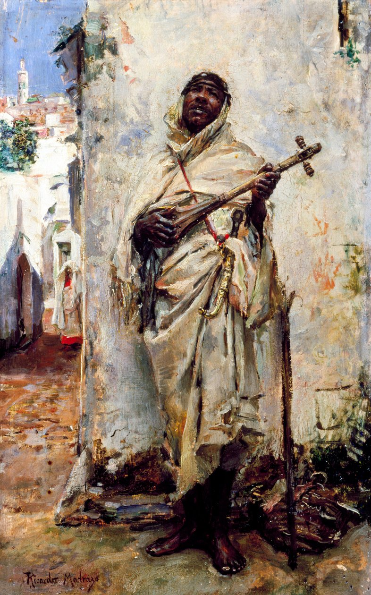
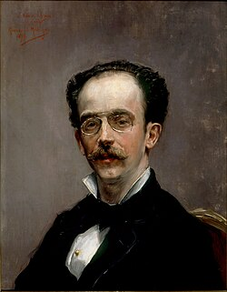

A Múzeum az elmúlt években számos új műalkotással gyarapította gyűjteményét, amelyeknek köszönhetően most először nyílik lehetőség egy olyan kiállítás megrendezésére, amely kizárólag Federico de Madrazo legkisebb fiának, a családi művészdinasztia kevésbé ismert tagjának munkásságát mutatja be.
A kiállítás középpontjában a papírra készült művei állnak, elsősorban vázlatfüzetei, rajzai és akvarelljei. Ezeken keresztül bemutatják művészi tevékenységének sokszínűségét: az itáliai régi mesterek festményeiről készített másolatoktól kezdve az orientalista alkotásokon át egészen a hétköznapi élet jeleneteit ábrázoló művekig.
Munkáin jól megfigyelhetőek azok a hatások is, amelyek számos spanyolországi, európai és észak-afrikai utazása során érték.
13/10/2026 - 17/1/2027


A mérnöki tudomány a Pradóban – Híd a művészet és a technika között